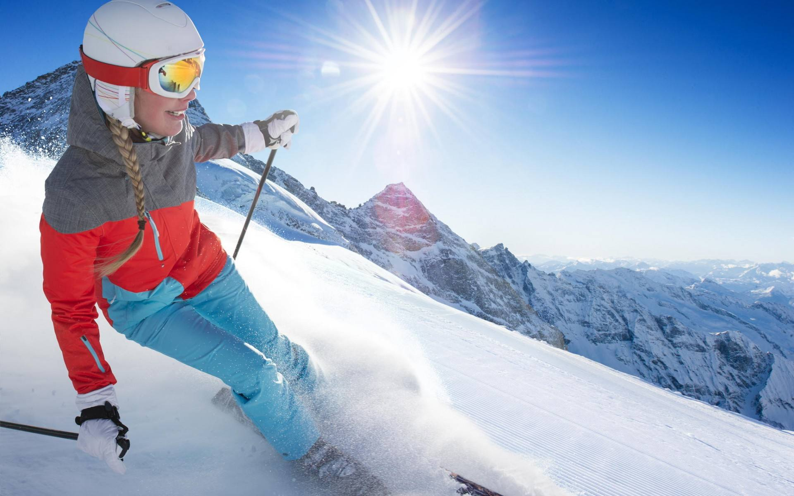
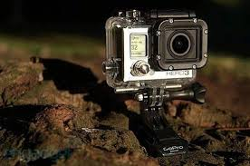
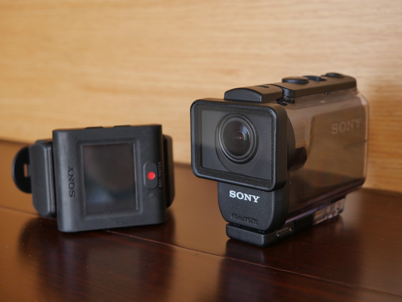

Action Camera
An action camera or action-cam is a digital camera designed for recording action while being immersed in it. Action cameras are therefore typically compact and rugged, and waterproof at surface-level. They are associated with outdoor sports, and, often attached to helmets, surfboards or handlebars, are an integral part of many extreme sports such as base jumping and wingsuit flying.

Pros:
- Rugged and compact
- Lightweight
- Versatile and mountable on almost any surface
- Remote view and shutter via smartphone

Cons:
- Viewfinder too small, if available
- Exposure settings not fully customizable
- Fixed focus
- Limited digital zoom